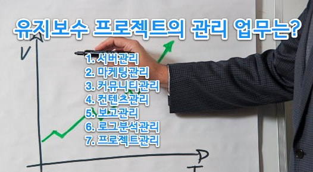

유지보수프로젝트의 관리업무
유지보수 프로젝트의 관리 업무는 무엇이 있을까?
일년에도 분기별로 메인 시안을 바꾸는 사이트가 있는가 하면 몇년이 되어도 그대로 유지하는 사이트도 있다.
보통 전자의 경우는 유지보수하기 힘든 경우가 될것이고 후자의 경우는 유지보수가 편한경우라고 생각할것이다.
하지만 실상은 그렇지 않다.
오히려 사이트 리뉴얼보다 컨텐츠의 질을 높이는 방향과 운영/마케팅 등의 전략을 짜고 그에 대한 로그분석까지 진행하는 후자의 경우가 더 힘든 기획이 된다.
유지보수는 그런것이다. 사이트의 디자인이나 바꾸는것이 유지보수 프로젝트가 되어선 안된다.

유지보수의 목적은 사이트의 리뉴얼이 되어서는 안된다.
모든 프로젝트에 근간은 프로젝트이 목적을 이해하는데 있다.
목적이 바로서지 않는 프로젝트는 완료될수 없고 그 목적을 클라이언트와 작업자는 명시해야 한다.
그 다음은 관리 업무를 이해 하는것이다.
유지보수의 관리 업무는 다음과 같다.
- 서버관리
- 마케팅관리
- 커뮤니티관리
- 컨텐츠관리
- 보고관리
- 로그분석관리
- 프로젝트관리
첫번째.
서버관리
사이트의 근간이 되는 기술적인 제반 업무를 통칭한다.
웹서비스를 하기 위한 모든 기술적인 업무에 대한 분석이 있어야 하고 그 분석을 근간으로 프로젝트관리를 진행 해야 한다.
대국민서비스를 하는 곳에서는 시스템에 대한 관리를 더욱 크게 생각하는곳도 있고 작은 시스템인 경우는 호스팅으로 진행 하는 경우도 있다.
어떠한 경우에라도 안전성이 가장 중요한 부분이 될것이고 그에 대한 적절한 비용배분도 관리 되어야 한다.
또한 서버의 구성현황과 소프트웨어의 구성현황 및 각 담당자들의 연락처까지 관리 되어야 한다.
두번째.
마케팅관리
만들어놨으면 홍보를 해야 한다.
요즘은 가장 중요한 부분으로 손꼽는 부분이기도하다.
유지운영보다 홍보와 이벤트에 치우져진 사이트를 보면 힘빠진 마라톤 같다. 그러지 않기 위해선 기본에 충실하여야 하고 꾸준한 운영도 필요하다. 반짝이는 마케팅은 유지보수의 적이다.
기본적인 장기적인 관리 방안을 마련해야 한다.
이벤트도 1년간의 이벤트 현황을 뽑아야 하고 어떤 형태의 진행을 할것인지 어떤 효과를 낼것인지를 목표로 잡아야 한다.
세번째.
커뮤니티관리
인터넷의 기본은 쌍방향 커뮤니케이션이 가능하다는 부분이다.
게시판에 글을 올렸을때 그에 대한 답을 하는 아주 간단한 인련의 일들에도 우리는 그 사이트의 질을 높에 평가하게 된다.
네번째.
컨텐츠관리
모든 근간이 되는것이 컨텐츠다.
컨텐츠관리는 분석이 50%를 차지 한다.
분석에 의한 컨텐츠 제공만이 질 좋은 컨텐츠를 만들어 낼 수 있다.
이와 관련된 시스템으론 '컨텐츠 질관리 시스템'이 있는데 컨텐츠를 작성하는 사람과 이에 대한 오픈 승인자들의 점수로 컨텐츠를 관리 하는것을 말한다. 중요한것에 대한 투자는 필요한것이다.
다섯번째.
보고관리
일반적인 프로젝트의 보고체계는 그대로 유지 하되 컨텐츠/회원/마케팅 등의 로그분석보고도 추가 되어야 한다.
요즘은 SLA에 대한 보고도 추가 되어 보고관리에 중요성은 더 높아지고 있는 실정이다.
여섯번째.
로그분석관리
웹사이트의 결과를 볼 수 있는것이 로그분석이다.
홍보와 유지운영이 얼마나 효과가 있는지를 확인할 수 있으며 이 결과로 차기 전략에 대한 근거로 제시 될수 있다. 그만큼 유지보수 프로젝트에서는 중요한 관리 중 하나다.
보통 월단위의 로그분석을 하는것이 원칙이며 로그분석툴에 의한 보고가 진행 된다.
일곱번째.
프로젝트관리
일반적인 프로젝트의 관리 들을 말한다.
기본적인 프로젝트 진행 시 필요한 관리들이 속한다.
마지막으로
유지보수프로젝트는 제작프로젝트와 다르다.
한땀한땀 공들여 제작해야 하고 그에대한 결과가 바로 나타난다.
일반 제작 프로젝트와 같은 관리 기법을 적용한다면 프로젝트 관리에 어려움을 느낄 수 있다.
관리의 중요도에 따른 진행이 필요하다.
'리뉴얼을 꿈꾸는 甲이여 올바른 유지보수프로젝트를 완료 하려면 리뉴얼을 하기 보다는 기본에 충실하여 내실을 다져라'